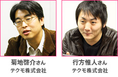
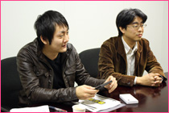
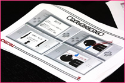
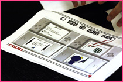
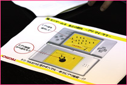
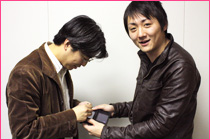
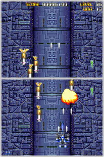
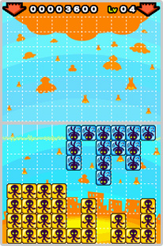
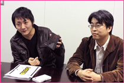

ニンテンドーDSiを上下サカサに持って、上になったタッチ画面を操作するというニンテンドーDSiウェア「あれ？DSがサカサですけど。」シリーズ。
『逆シューティング』は敵キャラを操って主人公をやっつけるというサカサなシチュエーションのシューティングゲームで、『サカサドロップス』は上画面で描いたブロックを下画面に落として消すというサカサなパズルゲーム。まさに“逆転の発想”と言えるこの2本について、テクモ株式会社の菊地さんと行方さんにお話をうかがいました。
――
変わったスタイルのゲームですね。
行方
まずDSのハードウェアの形状で面白いことができないかなと考えていたんですね。
僕自身は元々、玩具業界で企画をしていましたので、中身を考えるよりもDSをいろんな持ち方をしながら考えていたんですね。そのときに、上下サカサ持ちにしたら面白いんじゃないかと思い浮かんだんです。
まだ何のゲームもできていないんだけど、これはいいアイデアだと思い込んじゃって。
菊地
もう行方の中で「サカサ」っていう言葉が一人歩きしていましたね（笑）。
とにかく何でもかんでもサカサにしてみようみたいな。
――
すべては「サカサ」からスタートしたんですね。
行方
まずは、シューティングをサカサにしようと考えて、逆に主人公機を倒しちゃうみたいなゲームがいいなと。普通のシューティングをやっていると、ザコ敵ってあまりにもはかなくて応援したくなるじゃないですか。
菊地
敵機を操って主人公機を倒すゲームという企画書が上がってきて……
当時の企画は今よりももっと単純なものだったのですが、それだけだとたしかにネタとしては面白いし、やりたいことはわかるけど、最初は「それ別にサカサに持たなくてもいいじゃん」と思ったんですね。
やっぱりゲームとしてサカサさに持つ必然性というか、だからこそ面白い部分がないと弱いなと。
行方
それからたくさん企画書を作り、直し、怒られ、褒められ……

菊地
褒められはあんまり多くなかったけど。
一同
（笑）
菊地
「企画書100本ノック」みたいな感じで。
行方に一週間ごとに企画書を出してもらって、それをみんなで検討するというのをやったんですね。 ただ、よく見ると中身はほとんど同じゲームの企画を出してきたりもするんですよ。
行方
キャラだけ変えてカサを増やしたり（笑）。今日も参考に持ってきているんですが。
――
本当にいろんなものがありますね。
行方
これは、「カメレオンに憧れて」というミニゲームです。上画面からたれてくるよだれをぎりぎりで止めるというゲームです。
小さい頃よくやりましたよね……！？

行方
これは、「DEAD OR ALIVE ハエ」というゲームです。ハエを倒すのではなく、逆に絶体絶命のハエの気持ちになって、ハエタタキから逃げるゲームです。
あと……ゴキブリバージョンもあります。

行方
これは、後期の企画ですね。ちょっとゲームらしくなっています。アリ地獄に吸い込まれそうなアリを落ちないように助けます。

――
ちなみに、行方さんはゲーム開発ははじめてとうかがいました。
行方
はい。ずっとやってみたくて。
――
実際にやってみていかがでしたか？
行方
ゲームって形がないものなので、奥を深くしないといけないんだなと感じました。
いつも菊地さんから「入り口“は”いい」って言われるんですよ（笑）。
菊地
ゲームは双方向なので、プレイヤーは画面を見て、反射的に、あるいは思考的に入力して、それに対する反応があってという循環があるじゃないですか。
行方には最初はそれが一切抜け落ちていて。最初の一発だったんですよ。「見て面白い、以上」みたいな。いわゆるゲームデザインの部分がなかったんですね。
逆に、それは行方の良い部分でもあるんです。普通のゲームのプランナーだったら、どうしても既存の作り方のマナーみたいなものに従う部分があると思うんですが、まっさらなところから考えられるんですね。
行方
今回の2タイトルを通して、だいぶ大人になったと思います！
菊地
せっかくダウンロードしていただいたみなさまにネタ一発では申し訳がない、と。くりかえして遊べるように、一定期間は十分に楽しめるように、というのは考えました。
そういえば、開発中に行方が、「もう一声！」というのをテーマにしていて。
行方
『サカサドロップス』にパズルモードをつけたんですが、通販番組じゃないですけど、布団を買おうと思ったら「さらに枕もつきます！」というイメージで、おトク感を出したかったんです。200ポイントでたくさん遊んでもらいたいなと。
『逆シューティング』も、実際にDSを2人で持てば1台で対戦ができるなということで、企画当初から対戦モードをつけたくて。Wi-Fiとかがある今の時代に、あえて1台で対戦をするというのが時代に逆行していて面白いなと。「サカサ」だけに。
菊地
『逆シューティング』の対戦はお互いの呼吸が感じられるような近さでプレイするというのがポイントで。対戦ってどんなゲームでも面白いんですが、その面白さが何割増しかになるんじゃないかなと。
相手の画面を手でかくすような、アナログなイタズラもできるんですよね。
――
プレイするシチュエーションも込みで楽しめますね。
菊地
そう言えば、合コンツールにもなるとか言ってなかった？
行方
えっと……
昔『スターフォース』をプレイしていた親御さんなら、じゃあ子供と対戦をしてみようということで、親子のコミュニケーションも図れますし。ケンカした恋人同士も仲直りできるかなと。そういう人がいない方は、合コンなどで使っていただければ……こ、この距離感ですからね。

一同
（笑）
菊地
こう言ってますけど、きっと考えていた順番は逆ですよ。まず合コンがあって、その後で親子でも遊べるみたいな（笑）。
――
『スターフォース』というタイトル名がでましたが、『逆シューティング』には、テクモさんのシューティングゲームのキャラクターやステージ、音楽がそのまま出てくるのも面白いところですよね。
行方
まったくゼロから新規でやろうかとも考えたんですが、みんなが知っているものをサカサにした方がわかりやすいだろうと。まずは『スターフォース』から始まって、『エイトフォース』とか『ファイナルスターフォース』とかも入っているので、知っている方には懐かしさも感じてもらえるんじゃないかと思います。

菊地
シチュエーションを逆にするのに、ゲームも知っているものだと説得力も増すと思うんですよね。
行方
変えている部分や追加部分もあって、今回、敵である自機がボムを撃ってくるんです。すると（全画面範囲攻撃なので）仲間である敵機が全滅しちゃうんです。それで、ザコ敵ってこんなにもはかないものなんだなとわかります。
菊地
あとザコが全滅しちゃったときにプレイヤーが使えるボス戦ね。
行方
ボスなのに弱くしようかという案もでてたんですが、やっぱりボスは強くないと。
菊地
ボスがやられちゃうとゲームオーバーなんですよね。ボスは強いんだけど、ノーコンティニューだから大切だし、緊張するんです。
――
『サカサドロップス』についても教えてください。
菊地
元々の企画書では簡素なブロックで。連鎖もなくて、反射神経を競うようなゲームだったんです。

行方
それから欲がドンドン出てきて。シンプルなのもわかりやすいんですけど、もう少しにぎやかにしたいなと。
菊地
ちょっと世界観を付けくわえたんだよね。下が地球で、上に宇宙船があって。
行方
逆にあんまり細かい設定は、考えてなくて…… 宇宙人たちは上から落ちてきたのに消えちゃうから「何しに来てるの？」みたいなところもありますね（笑）。
菊地
そこ何回も聞いてたのに、説明する度に違うこと言ってたな。
行方
なぜ消えるのかは、次回作で明らかになります！
一同
（笑）
菊地
下から上にではなくて、タッチペンを使って上の画面でブロックを描いて、下の画面でブロックをはめると気持ちいいだろうということで始めたわけですが、それだけじゃゲームとして弱いなと。
行方
最初にテストプレイしてもらったときに、はめるのは気持ちいいのですが、みんな「行方さんコンボは？」って言うんですよ。実際に入れてみたら、自分でも「あ、これやばい面白い！」みたいな。
それから、とりあえずいろんな形のステージを作ってプレイしてみて、難易度を見ながらパズルモードに入れていきました。最初のうちはただはめるだけでクリアできるけど、あとの方になってくると少し先を読まないとダメ、みたいな。

――
うまくプレイするためのアドバイスはありますか？
行方
最初のうちは1ラインずつ消すところから始めていただいて、少しずつ一度にたくさんのブロックを消せるように練習するところからですね。1ライン消すだけだと100点くらいなんですが、1画面のブロックを全部一度に消すと、最終的に50万4000点とかでます。
菊地
どちらのゲームも、やりこめばそれだけ遊べるように、攻略法も結構人それぞれに幅がでるようになっています。パズルモードでどうしたらいいかわからなくて詰まってしまった方は、公式サイトの動画なども参考にしていただけるといいかもしれません。
菊地
シリーズタイトルは、難しかったね。
行方
そうですね。
菊地
「あれ？DSがサカサですけど。」は絶対ダメだと私が強く言ったんです。
それで、他にも案を出してくるんだけど、全部当て馬なんですよ（笑）。「あれ？DSがサカサですけど。」にしたがっているのが企画書を読んでてわかるんです。これだけは譲らないんですよ。
行方
僕もすごい勢いで「ダメ！」と言われてビックリしました（笑）。
菊地
ところが、ある休日に買い物に行ったときに、レジの隣においてあるような、ふと手にとっちゃうものに目がいったんです。そういう商品って、お客さんに話しかけるようなネーミングなんですよね。たしかにDSiウェアって、DSiショップを見ていてちょっとプレイしてみようと思ったら、すぐに購入してもらえるというものなんですよね。
それで、その場で行方に電話して。それで行こうと。
――
最後にメッセージを。
行方
ご存じない方がいらっしゃったら、とにかく「何これ？」って気にしてプレイしていただきたいですね。
まだ電車の中でDSをサカサに持ってる人を見たことがないんですよ。
それで本当に見かけたら、その人に向かって「あれ？DSがサカサですけど」って言いたい（笑）。周りの人に教えてあげたりすると面白いゲームだと思いますし、もちろん……合コンでもぜひ遊んでいただきたいです。
一同
（笑）
菊地
単なるネタだけではなく、サカサに持って遊ぶことが、ゲームとして気持ちいいようにデザインしましたので、実際に体験してほしいですね。お客さまがすぐに購入できて、反応をいただけるというのもニンテンドーDSiウェアならではですし、ご意見やご感想などもドシドシいただけるとありがたいですね。
――
今後の続編の予定などは？
行方
ネタはたくさんあるんで、僕としてはぜひ（笑）。
ゲーム以外でも「ポッキーがサカサですけど。」とか。
菊地
それ単なる「ポッキー」じゃん！
行方
チョコの部分とそうじゃない部分の比率が普通とは逆なんですよ！
一同
（笑）
菊地
そういうこと考えてる間に、ちゃんとネタを考えようよ（笑）。
何でもサカサにすればいいというわけじゃなく、次は「あ、これサカサにするんだ！」と驚いていただきたいですね。また、お客さまのご要望があってのことですが、おかげさまでたくさんダウンロードしていただいていますので、ご期待は真摯に受け止めていきたいと思っています。
――
ありがとうございました。
｜「あれ？DSがサカサですけど。」シリーズ｜かたむく＋アクション カタムクション｜